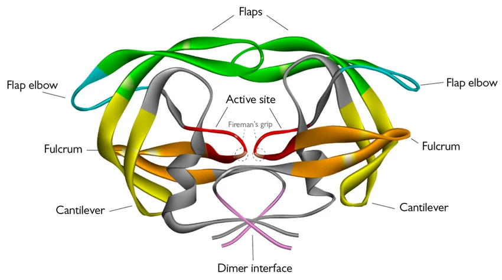
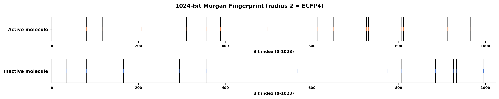
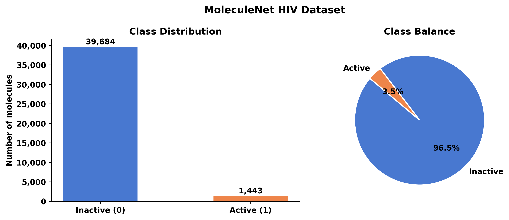
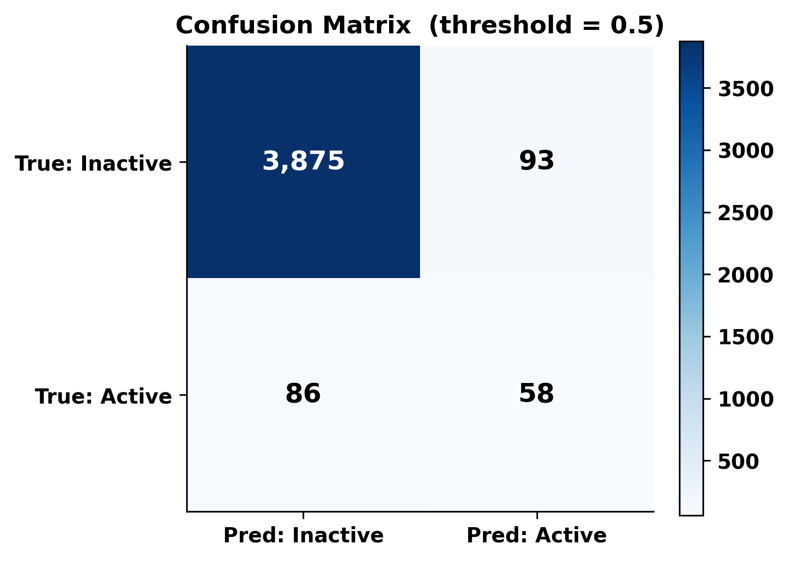
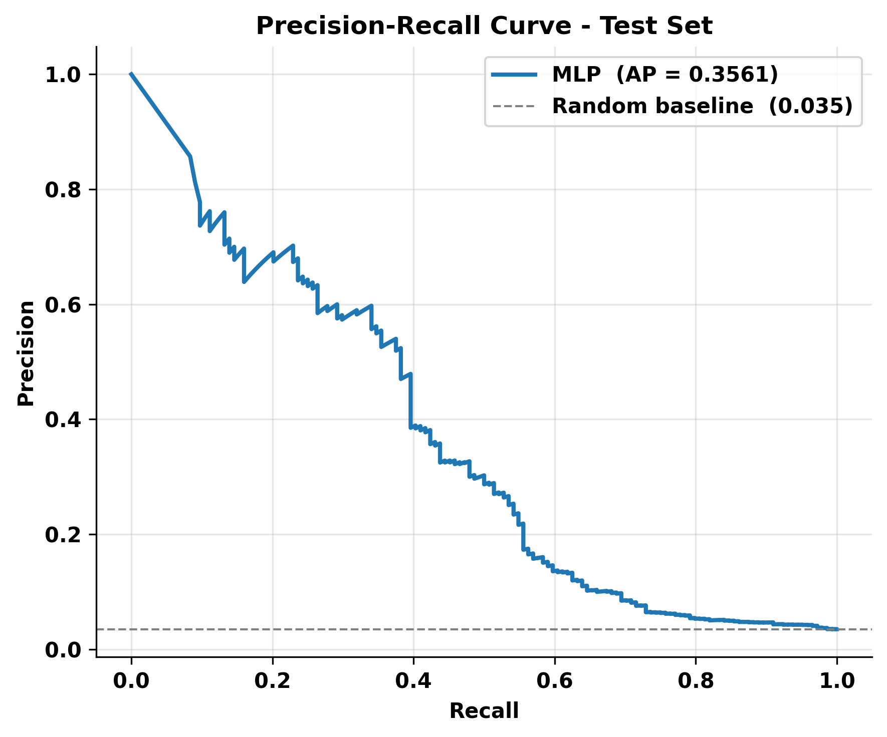
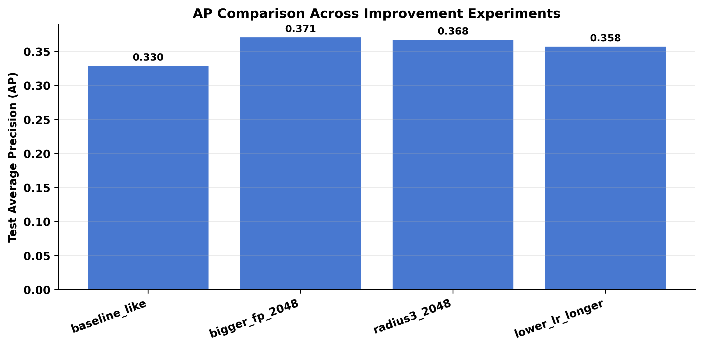
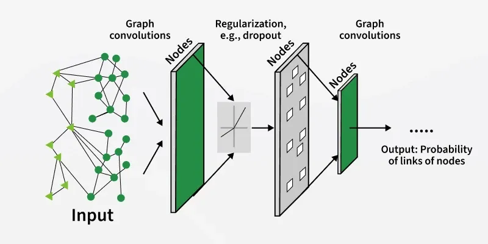

AI-Driven Drug Discovery
Harnessing computational screening to revolutionize drug discovery—dramatically reducing wet-lab costs and accelerating the identification of novel HIV-1 protease inhibitors.
- The Vision: Why Computational Screening?
- The Bridge: Featurizing Molecules
- The Brain: Deep Learning Theory
- The Build: Tackling Imbalance
- The Breakthrough: Results & Impact
- The Future: Next Steps

Numeralizing Chemistry
Morgan Fingerprints encode circular neighborhoods of atoms into bit-vectors that the MLP can actually "read." This bridges the gap between raw chemistry and machine learning.

The "Needle in the Haystack" Problem
The dataset is highly imbalanced: 3.5% Active, 96.5% Inactive. A model that always predicts "Inactive" gets 96.5% accuracy—but finds zero drugs. We need specialized loss functions.

Learning the Chemical Grammar
A multilayer perceptron (MLP) learns to map molecular fingerprints to inhibition probability. Each layer transforms the representation, extracting higher-order features. Backpropagation enables the network to learn from errors and improve predictions.

Balancing the Scales
We force the model to care ~27x more about missing an Active compound. The penalty slider shows how the scale balances as we increase the weight for Actives.

ROC Curve: Separating Actives from Inactives
The ROC curve shows the model's ability to distinguish actives from inactives across all thresholds. High AUROC means the model is good at ranking actives above inactives.

PR Curve: Finding Rare Actives
The PR curve is more informative for imbalanced datasets. High area under the PR curve (AUPRC) means the model finds rare actives without too many false positives.

AP Experiment: Model Comparison
This experiment compares average precision (AP) across different models or settings, highlighting the best approach for identifying actives.

The Future: Next Steps
This project demonstrates the transformative potential of deep learning for molecular property prediction. Next: explore Graph Neural Networks for richer molecular representations and integrate active learning for iterative improvement.